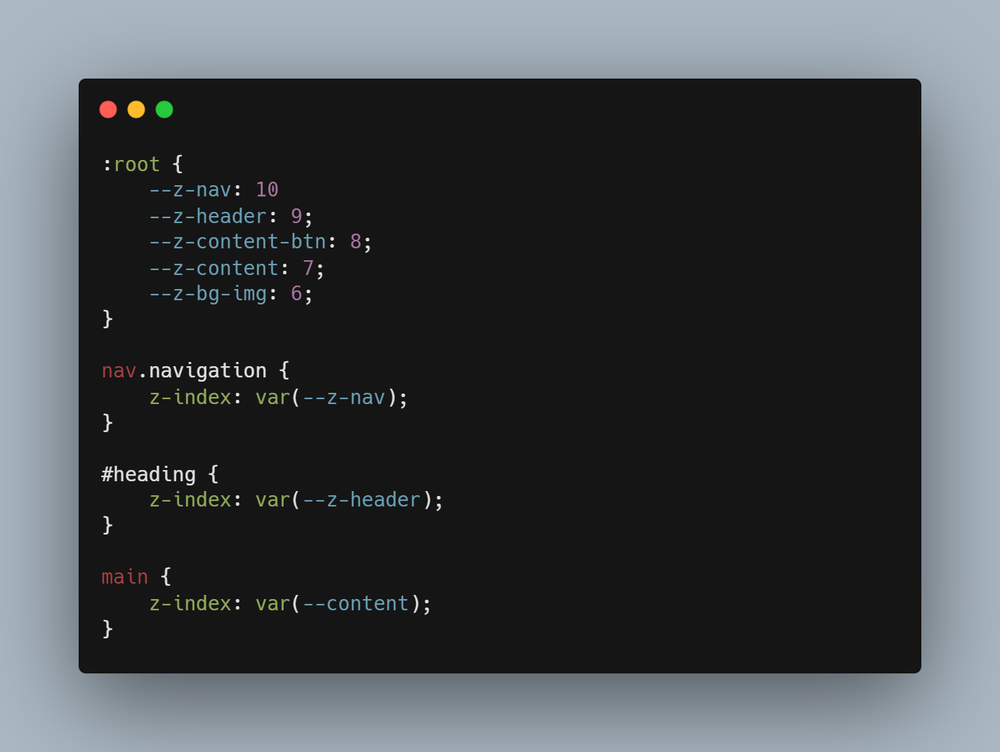

Wat en waarom
Z-index is een handige truc. Het wordt veel gebruikt tijdens het maken van websites, omdat het een sterke en solide methode is. Z-index geeft eigenlijk een laag aan een element. Een element met een hogere z-index staat hoger op een website dan een element met een lage z-index. Deze sterke property wordt veel gebruikt bij navigatiebalken, knoppen die over teksten moeten hoveren, en andere gave layouts waar gebruik wordt gemaakt van veel overflowing.
Het probleem van Z-index
Z-index wordt veel gebruikt, maar dat zorgt ook meteen voor veel problemen. Wanneer je veel elementen hebt die een z-index bevatten kan een project al snel onoverzichtelijk worden. Als je dan een element wilt toevoegen wordt het gokken naar een passende z-index, want het moet bijvoorbeeld onder de navigatie komen te staan maar boven die mooie afbeelding waarvan je de z-index niet meer weet. Dit probleem kan gemakkelijk worden aangepakt, waardoor je code overzichtelijker wordt, en ook heel makkelijk aan te passen is.
CSS variabelen
De meeste mensen met kennis van CSS hebben vast wel ergens gehoord van of gewerkt met CSS variabelen. CSS variabelen zijn custom properties die je in je CSS kan aanmaken en later in je code kan gebruiken. Deze custom properties kunnen alles bevatten, van een width van 30vw tot een background gradient, en ze kunnen dus ook een z-index opslaan. De custom properties verbeteren consistentie tussen verschillende elementen, omdat je de properties later aan kan roepen in je code, waardoor het makkelijk herbruikbaar is en op één plek alles kan worden aangepast. Custom properties maken het ook makkelijk om meerdere z-indexes te definiëren, met namen als bijvoorbeeld "nav" en "image". Deze variabelen zijn dan weer gemakkelijk aan te roepen bij je elementen later in de code.
Versimpelde Z-index
In het voorbeeld hieronder is te zien hoe je de Z-index op een betere manier kan aanpakken. Door deze methode toe te passen is het overzicht makkelijker te behouden, en zijn aanpassingen aan Z-indexes makkelijker te maken omdat het allemaal op dezelfde plek staat gedefinieerd. Hierboven worden verschillende CSS variabelen aangemaakt, in de pseudoclass :root, die bovenaan het bestand wordt gedefinieerd. Deze pseudoclass zorgt ervoor dat de variabelen door het hele gelinkte HTML & CSS document beschikbaar zijn. Vervolgens zijn deze variabelen te gebruiken op en later moment in de code, zoals hierboven te zien is. Deze aanpak kan nog verder uitgewerkt worden, door bijvoorbeeld een ander CSS bestand aan te maken. Het is dan mogelijk om de variabelen te definiëren in een eigen bestand, en te gebruiken in de andere CSS bestanden. Wel is het belangrijk bij deze aanpak om het bestand met Z-indexes in te laden voordat andere CSS bestanden worden ingeladen, omdat de variabelen anders misschien niet kunnen worden gebruikt.